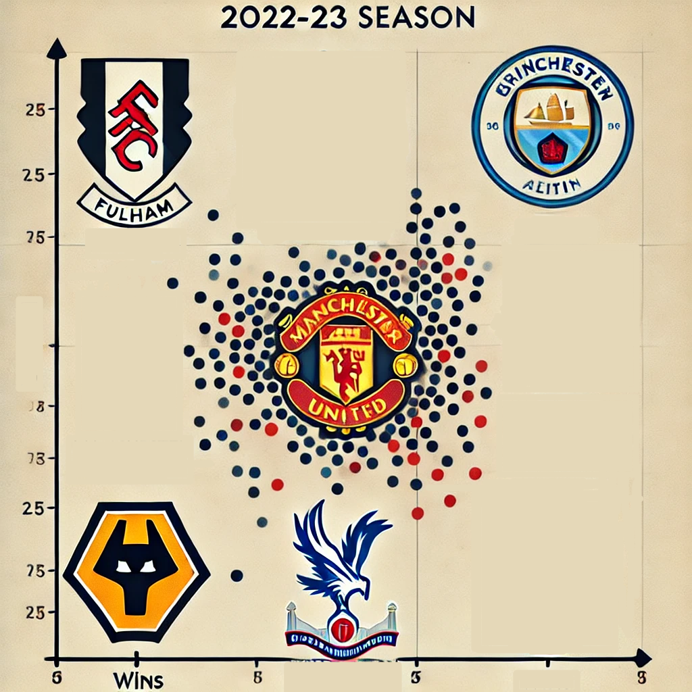

Design and Mockups
Critical Consideration of Strengths and Weaknesses
Strengths:
Contrast
Application: The use of contrasting colors in the navigation bar and buttons enhances visibility and directs user attention to important elements. The contrast between text and background makes the content easier to read.
Theory Relation: According to the principles of contrast in design, using differing colors can effectively guide users through the interface. This approach helps in prioritizing information and improving the overall user experience.
Negative Space
Application: The effective use of negative space around images, buttons, and sections allows users to focus on specific content without feeling overwhelmed. This is particularly useful in the header and footer, where the content is distinct and easily navigable.
Theory Relation: The theory of negative space suggests that the space around and between elements can be just as important as the elements themselves. By applying this principle, the design achieves a clean and organized appearance, making the interface more user-friendly.
Font Choice and Hierarchy
Application: The selection of fonts that complement the overall theme of sports and analytics contributes to the brand identity. The use of different font sizes and weights helps establish a clear hierarchy of information, guiding users from headings to subheadings and body text.
Theory Relation: Effective typography is essential in web design as it influences readability and user engagement. By following typographic principles, the website creates a visually appealing layout that enhances the comprehension of information.
Information Layout
Application: The layout of information is logical and intuitive, with sections clearly delineated. Users can easily navigate through different pages, and the arrangement of data tables and visualizations facilitates quick understanding of statistics.
Theory Relation: Information architecture theory emphasizes the importance of organizing content logically. The site's layout follows this principle, making it straightforward for users to find and interact with desired information.
Interactivity
Application: The implementation of interactive elements, such as scatter plots and data visualizations using D3.js, engages users and provides an immersive experience. Hover effects and tooltips enhance user interaction by providing additional context.
Theory Relation: The concept of interactivity in web design posits that user engagement can be significantly improved through dynamic content. This aligns with contemporary expectations of interactive media, where users seek to actively participate in their digital experiences.
Weaknesses:
Over-Reliance on Contrast
Issue: While contrast can improve readability, over-reliance on bright colors may lead to visual strain for some users, especially those with certain visual impairments.
Theory Relation: The principle of accessibility in design emphasizes the need for inclusivity. It is crucial to ensure that color choices meet accessibility standards (like WCAG) to accommodate users with different abilities.
Insufficient Negative Space in Certain Areas
Issue: In some sections, particularly within the EPL data table, the lack of adequate negative space can lead to a cramped appearance, making it challenging for users to process information quickly.
Theory Relation: Negative space theory suggests that cluttered designs can overwhelm users, leading to cognitive overload. Ensuring adequate spacing can improve usability and information retention.
Font Legibility
Issue: Some of my font choices may not be optimal for all devices, particularly on smaller screens because of the small size of the text rendered. Users might struggle to read smaller text sizes, especially if not adequately contrasted with the background.
Theory Relation: The principles of typography emphasize that legibility is vital for effective communication. Adopting responsive typography can ensure that text remains legible across various screen sizes.
Information Overload
Issue: While the layout effectively organizes information, there might be instances of information overload, particularly on the predictor page. Users may feel overwhelmed by the number of statistics presented without sufficient contextual guidance.
Theory Relation: Information overload theory highlights the challenges users face when presented with excessive data. Implementing progressive disclosure, where information is revealed in stages, can enhance user comprehension.
Interactivity Limitations
Issue: The interactive elements may not be fully optimized for all devices, especially mobile. Users on touch devices may find it challenging to engage with small interactive elements.
Theory Relation: The theory of responsive design underscores the importance of ensuring that interactive features function seamlessly across all devices. Improving the touch target sizes and implementing mobile-friendly interactions can enhance accessibility.
Chart Design
The scatter plot on the EFL page was created using the D3.js library. CSS was used to style the chart, tooltips, and different sections (elite, middle, and poor). JavaScript was responsible for fetching the EPL data and dynamically generating the plot.
Description: This is a mockup for the chart layout, visualizing teams' wins vs. performance in the 2022-23 season.
Design Mockup

Description: A comprehensive design mockup showing how different EPL visualizations and graphs can be arranged for a dynamic user interface.
Premier League Table

Description: The current standings of the English Premier League for the 2022-23 season.